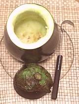

SAFARI
Users
Selecting Eggplants
In all cases eggplants should be bright in color and without bruises and in particular without brown spots or dents which indicate they've been stored too long. Select eggplants heavy for their size because this indicates a young fruit which will have better texture than an older one.
As you can see from the Eggplant Page there are quite a few varieties. Most, however, are quite similar in flavor, texture and cooking properties so selection of variety is often a matter of what size and shape fits the recipe best.
The exceptions to interchangeability are:
- Globe Eggplants have tough skins that generally need to be peeled so they don't substitute well for small eggplants where the peel is generally part of the recipe.
- White Eggplants have tough skins and need to be peeled which makes them unsuitable for many recipes calling for small eggplants.
- Thai Eggplants remain much firmer than others when cooked so if you have to substitute Indian or Asian eggplants keep the cooking time to a minimum and treat them gently.
"Male" & "Female" Eggplants
Many chefs, cooking sites and cookbooks instruct you on how to tell a "male" eggplant from a "female" eggplant. These people all need a refresher course in sex education, and perhaps remedial biology.
Eggplants are fruit. They do not and can not have sex - they are the product of sex in the flower. Eggplant flowers are all both male and female, and the fruit is a product of the female part of the flower - no exceptions.
It is claimed "male" eggplants have a small round flower scar, have fewer seeds and are "less bitter". "Female" eggplants are said to have a larger, elongated flower scar, more seeds and more "bitter juices". Most say to buy only the "male" ones, but a few advisors get it the other way around.
Now, I'm not yet convinced eggplants actually have "bitter juices", but as for the quantity of seeds, there may be some truth in this flower scar theory. Those with a stretched out scar may have been more thoroughly pollinated, thus more seeds. It is not, however, from gender differentiation.
Cutting
Many sources recommend cutting eggplants only with stainless or ceramic knives to avoid discoloration. I haven't bothered to verify this since good stainless knives are much more common than carbon steel knives these days, but be informed.
Before peeling or cutting eggplant, prepare a big bowl of water with a teaspoon of citric acid or juice of a lemon in it and a teaspoon of salt. Cut surfaces should be immediately plunged into this water and kept wet to avoid browning and becoming ugly.
Peeling
Eggplants do not always have to be peeled. In particular the smaller sizes and long thin ones are usually not peeled, but the large globe eggplants and white eggplants have thicker skins and are often peeled. Eggplants for stuffing are not peeled regardless of size.
Eggplants present a much more difficult peeling problem than their relatives the peppers and tomatoes. The butane blowtorch which works so well on peppers doesn't work. Scalding, which does a great job on tomatoes doesn't work at all. Paring knives are hard to control and tend to take way too much eggplant.
Vegetable Peeler Method:
I find this the best solution in most cases. You don't have to heat up the broiler or have hot coals ready. I prefer a very sharp "Y" shaped peeler rather than the straight models. Some of these are designed for vegetables with a much smaller diameter than a big globe eggplant so they may have feet at the corners that keep the blade from contacting the skin. These feet can be cut or filed off. The one I use is the Titan brand, extremely sharp and does an excellent job.Broiler / Grill Method:
This method chars the skin under a preheated broiler or over a charcoal or gas grill. This also cooks the eggplant quite deeply, even all the way through. The charred skin can contribute flavor to the eggplant which may be desirable, depending on recipe. Of course, if you grill over charcoal you'll impart even more flavor. Do Not attempt to char the eggplant over a stovetop gas burner - this doesn't work even as well as the blowtorch.Generally you will split the eggplant lengthwise and place the halves cut side down on an oiled foil, then slide under the broiler. You can do narrow eggplants whole if you need to by turning during broiling. I find this method works much better if you lightly oil the skins before broiling. Once they have become wrinkled and the eggplant is cooked through, cool it enough to handle and pull the skin off in lengthwise strips. Start your strip thin, just the skin, because it'll maintain the starting depth for the full length. A thick peel will compromise the integrity of your eggplant.
Salting
Many sources say to salt eggplant slices or cubes and let them sweat for 1/2 hour to an hour "to draw out the bitter juices". I am not convinced that eggplants have any bitter juices or that this treatment would draw them out if they did.
Salting does, however, perform a very useful function. If you are going to fry the eggplant in oil this treatment greatly reduces the amount of oil that will be absorbed. Unsalted eggplant is an oil sponge without peer.
First give the eggplant the citric acid bath as described under cutting and peeling, then drain and salt it liberally. Let the eggplant sweat in a glass or stainless bowl for between 1/2 and 1 hour, turning now and then. Finally rinse the eggplant in several changes of warm water until it does not taste too salty.
Stuffing
 Eggplants are a favorite vegetable for stuffing all over the world, and in all sizes from chicken egg to football. They may be sliced lengthwise, crosswise or just the stem end cut off and the flesh scooped out. This flesh is often returned as part of the stuffing.
There is one nearly perfect tool for hollowing out eggplants quickly and without damage - it's called a "butter curler" (and you can use it for curling butter too!).
Start by cutting the eggplant in the direction the recipe calls for. Then outline the area to be scooped out with a small sharp knife cutting as deep as is safe. Then take the butter curler and scoop away. until you've worked out to the knife cut.
As you work plunge the pieces you remove into a bowl filled with water
acidulated with citric acid or lemon juice with some salt added. This
will keep it from browning and looking ugly. When you are through with
the scooping rinse out the shell with the same acidulated water to
prevent it from browning.
Cooking
Pan Frying:
Many recipes call for a horrifying amount of olive oil. The specified amount can often be cut in half if you salt the eggplant pieces.In general you'll want to use Pure Olive Oil, not Extra Virgin. You could keep the frying temperature low enough for extra virgin, but even salted eggplant will absorb so much oil that extra virgin is likely to be overpowering.
- Peel Eggplants and cut less than 1/2 inch thick, into steaks or squares.
- Salt Eggplants lightly and set aside for about 30 minutes, tumbling a couple of times.
- Rinse until not noticeably salty. Squeeze gently and drain well. A salad spinner is a great help here.
- Heat about 1 Tablespoon of Oil, or a little more depending on the size of your pan, to about 350°F/175°C.
- Fry Eggplant in batches so they aren't crowded. When browned on one side, turn with a thin turner and brown the other side. Turning several times won't hurt. Add more oil between batches as needed.
- Drain on paper towels.
Oven Roasting:
This method is more reliable than pan frying, and the eggplant ends up with a lot less oil.- Preheat the oven to 420°F/215°C.
- Peel Eggplants and cut 3/4 to 1 inch thick, into steaks or cubes.
- Salt Eggplants lightly and set aside for about 30 minutes, tumbling a couple of times.
- Rinse until not noticeably salty. Squeeze gently and drain well. A salad spinner is a great help here.
- Tumble the Eggplant pieces with Olive Oil to coat reasonably well.
- Lay slices or steaks in a single layer on oiled foil on a baking sheet.
- Roast them for about 20 minutes or until nicely browned, turning them once, or tumbling a couple times for smaller cubes.
Recipe Notes
When combining foods keep in mind that eggplant is sweet - sometimes overpoweringly sweet.